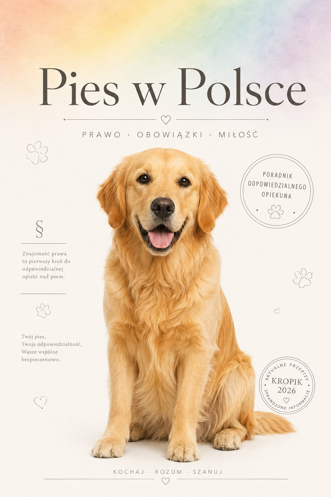
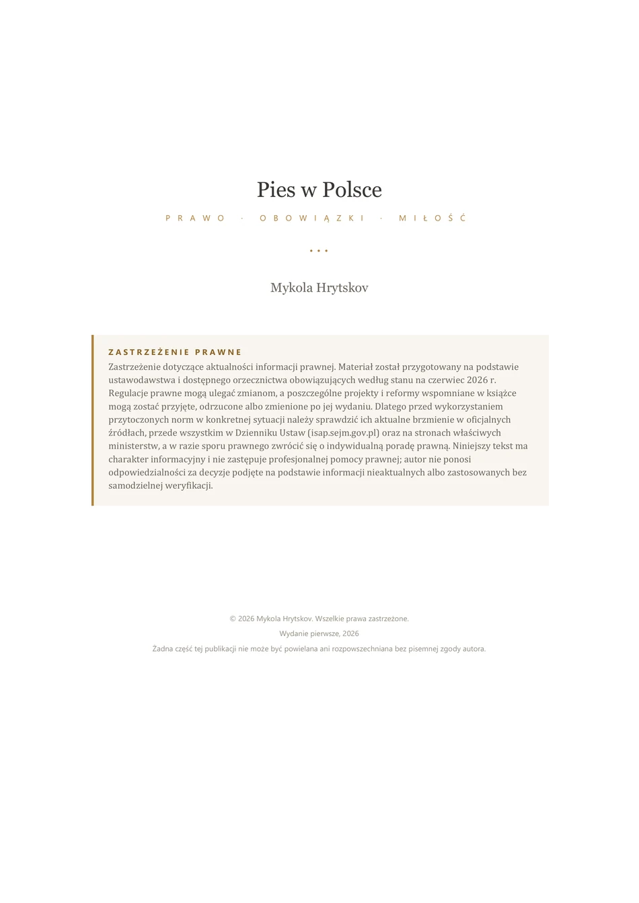
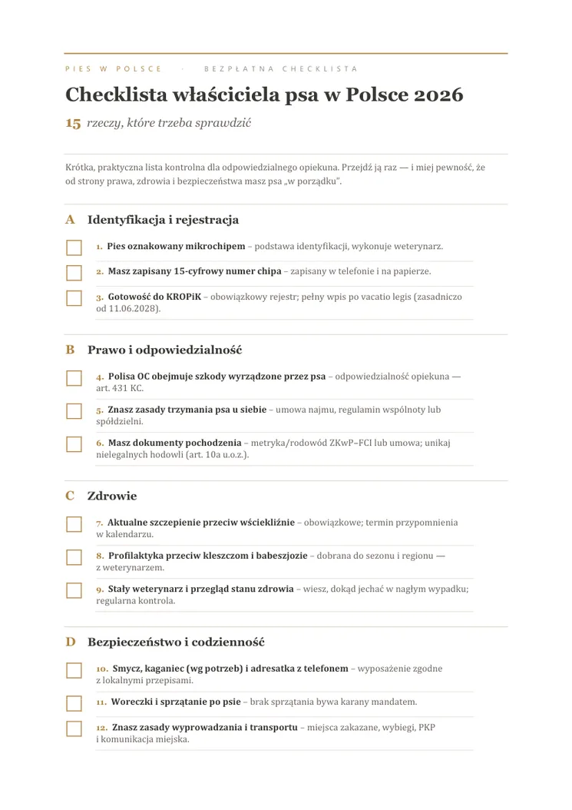

Zrozum prawo
Dowiedz się, gdzie kończy się zwyczaj, a zaczyna obowiązek.
Cała książka i cały podcast — za darmo
Pies jest rodziną. Prawo widzi także odpowiedzialność. 618 stron o KROPiK, kosztach, zdrowiu i zachowaniu — od dziś w całości za darmo, razem z podcastem do każdego z 61 rozdziałów.
PDF · 618 stron · 19 MB · bez zapisu, bez e-maila, bez opłat

Stan prawny książkiczerwiec 2026
Jedna książka.
Zero złotych.
Nie kolejna lista porad
Co zrobić po ugryzieniu? Czy wspólnota może zakazać psa? Kiedy aktualizować dane w rejestrze? Jak rozpoznać objawy babeszjozy? Ile naprawdę kosztuje dwanaście lat opieki?
Życie z psem nie dzieli się na osobne zakładki „prawo”, „zdrowie” i „zachowanie”. Jedna sytuacja często dotyka ich wszystkich. Dlatego ta książka porządkuje je w jednym miejscu — konkretnie, spokojnie i po ludzku.
To nie jest poradnik o przeprowadzce do Polski. To polski, codzienny przewodnik dla tych, którzy chcą opiekować się psem świadomie — bez zgadywania i dziesiątek sprzecznych odpowiedzi z internetu.
Dlaczego za darmo? Bo wiedza o tym, co wolno, co trzeba zrobić i co może uratować psu życie, nie powinna zależeć od tego, czy ktoś ma akurat wolne pięćdziesiąt złotych. Książka powstawała miesiącami — i od teraz jest po prostu twoja. Bez opłat, bez zapisu, bez haczyków.
Dowiedz się, gdzie kończy się zwyczaj, a zaczyna obowiązek.
Rozpoznawaj ryzyko wcześniej, zamiast szukać odpowiedzi dopiero w kryzysie.
Połącz zdrowie, emocje, finanse i odpowiedzialność w jedną świadomą opiekę.
61 rozdziałów · 61 odcinków
Do każdego rozdziału książki powstał osobny odcinek podcastu. Ten sam materiał — prawo, weterynaria, zachowanie — tylko do słuchania: w aucie, na spacerze z psem, przy sprzątaniu.
Odcinki pojawiają się na kanale YouTube — bez logowania, bez opłat i bez limitu. Możesz słuchać po kolei albo wejść od razu w konkretny temat z listy poniżej.
Wolisz mieć nagrania u siebie? Wszystkie 61 odcinków leży też w jednym folderze do pobrania: Google Drive
Pełny spis treści
Numer strony wskazuje miejsce w PDF-ie, przycisk obok prowadzi do odcinka podcastu. Nic nie jest zablokowane — cała książka i cały podcast są bezpłatne.
Pobierz całą książkę (PDF, 19 MB)Polska — rynek, statystyka i ekonomika posiadania
rozdziały 01–04
Ustawy, sądy, sąsiedzi i granice kontroli nad psem w Polsce
rozdziały 05–17
Zdrowie, profilaktyka, choroby i opieka nad psem
rozdziały 18–34
Psychologia, szkolenie, socjalizacja i korekta zachowania
rozdziały 35–42
Żywienie, podróże, ubezpieczenie, wybór psa i rynek zoologiczny
rozdziały 43–61
Najważniejsza reforma dla opiekunów
Wokół czipowania psów narosło więcej zamieszania niż wokół jakiegokolwiek innego przepisu ostatnich lat — bo ogłoszenie ustawy myli się z jej wejściem w życie. To dwie różne daty i dzielą je prawie dwa lata.
Rozdzieliliśmy to na osobnej stronie: co ustawa wprowadza, od kiedy i co z tego wynika dla ciebie.
Zanim pies pojawi się w domu
Nie licz tylko karmy. Policz wspólne życie.
Realny rachunek za dwanaście lat mieści się między 80 a ponad 200 tysiącami złotych — mniej więcej tyle, ile kosztuje samochód klasy średniej. Karma to zaledwie jedna czwarta tej kwoty i jedyna część, którą widać z góry.
Model dla psa 15–25 kg w dużym polskim mieście, ceny 2025–2026. Rozbicie na dziewięć kategorii, wydatki na start i trzy scenariusze — na osobnej stronie.
Kochaj · Rozum · Szanuj
Dom, zdrowie, relacja i prawo nie istnieją osobno. Jedna decyzja często wpływa na wszystkie naraz.

Czytnik na stronie — bez pobierania
52 strony, pełny spis wszystkich 61 rozdziałów i pięć rozdziałów w całości — wprost w przeglądarce, bez pobierania czegokolwiek. Cała książka czeka niżej.
Pobierz fragment PDF
1–2 / 52
Przesuń palcem · użyj strzałek · wybierz stronę
Pełne wydanie też jest bezpłatne. 618 stron, 61 rozdziałów — jeden plik PDF, bez rejestracji i bez opłat.
Pobierz pełne wydanie
Bezpłatnie
Dwie strony konkretów do zapisania w telefonie lub wydrukowania. Krótka lista spraw, o których łatwo pamiętać dopiero wtedy, gdy stają się pilne.
Bez zapisu. Bez newslettera. Plik otworzy się na telefonie i komputerze.
Pytania, które wpisujemy w Google
Prawo i regulaminy się zmieniają. Odpowiedzi poniżej wskazują kierunek, a książka — którą możesz pobrać za darmo — daje pełny kontekst.
Najczęstsze tematy mają własne strony: KROPiK i czipowanie, ile kosztuje pies, gdzie wolno wejść z psem, zjadł coś trującego, kto odpowiada za pogryzienie, pies w bloku i na wynajmie, pies w pociągu i w aucie, kleszcze i babeszjoza, zaginął pies, wyje, gdy wychodzisz, adopcja i wybór psa, pies po rozwodzie, kamera w domu a RODO, rasy uznawane za agresywne, gdy pies umiera, schroniska w liczbach, gdy psa odbiera urząd, pies w spadku, pies asystujący i wstęp do lokali, pies i dziecko, szkolenie bez dominacji. Osobno: o samej książce — jak jest zbudowana, dlaczego jest za darmo i jak ją cytować.
W czerwcu 2026 roku trwał kolejny etap prac nad pełniejszym zakazem trzymania psów na uwięzi. Uchwalenie ustawy nie jest tym samym co jej wejście w życie, a status może się zmienić po zamknięciu wydania. Przed podjęciem decyzji trzeba sprawdzić aktualny tekst ustawy o ochronie zwierząt.
Nie. Książka ma charakter edukacyjny: pomaga zrozumieć temat, przygotować pytania i rozpoznać sytuacje wymagające pomocy specjalisty. Nie zastępuje indywidualnej porady prawnej, diagnozy ani leczenia.
Nic. Cała książka w PDF (618 stron) oraz wszystkie 61 odcinków podcastu są bezpłatne — bez rejestracji, bez newslettera i bez podawania adresu e-mail. Żadna część treści nie jest ukryta za opłatą.
Do każdego z 61 rozdziałów powstał osobny odcinek. Odcinki pojawiają się na kanale YouTube @PieswPolsce, a z listy rozdziałów na tej stronie można przejść od razu do wybranego. Same nagrania audio leżą też w folderze na Google Drive — do pobrania w całości.
Tak. Możesz podsłać link do tej strony albo przesłać PDF znajomym, do schroniska czy na grupę dla opiekunów psów. Proszę tylko nie sprzedawać pliku i nie podpisywać go cudzym nazwiskiem.
52 strony: pięć pierwszych rozdziałów w całości i pełny spis wszystkich 61 rozdziałów. Czytnik jest po to, żeby zajrzeć do środka bez pobierania dużego pliku — ale cała książka i tak jest dostępna za darmo.
Dobra opieka zaczyna się przed pierwszym problemem
Prawo się zmienia. Koszty rosną. Pies komunikuje potrzeby, zanim pojawi się kryzys. Ta książka porządkuje wiedzę, do której możesz wracać przez całe wspólne życie — i nie kosztuje nic.
PDF · 618 stron · 19 MB · bez rejestracji i bez opłat.
Kochaj · Rozum · Szanuj